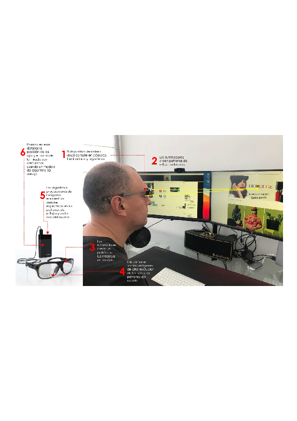
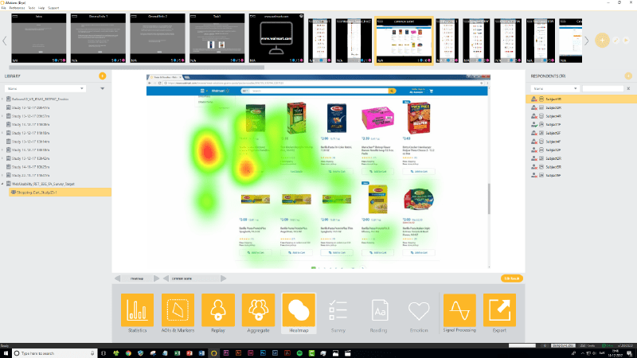

Resumen.
El estudio analiza los efectos neuroconductuales de las marcas en la elección del consumidor, considerando los procesos conscientes e inconscientes que influyen en la toma de decisiones. Se desarrolló una investigación experimental con enfoque cuantitativo y técnicas neurocientíficas, entre ellas el seguimiento ocular, para medir la atención visual, la respuesta emocional y la preferencia ante distintos estímulos de marca. La muestra estuvo conformada por jóvenes consumidores con visión normal, expuestos a imágenes y logotipos de marcas reconocidas. Los resultados evidencian que las marcas activan mecanismos automáticos de atención y emoción que influyen en la evaluación y preferencia del producto, aun sin intervención racional. Se concluye que las marcas operan como estímulos neuroconductuales capaces de modular procesos cognitivos y afectivos, reforzando su papel en la formación de valor percibido y en la predicción del comportamiento de elección del consumidor.
Palabras clave:
marcas; toma de decisiones; neurociencia del consumidor; procesamiento inconsciente.
Abstract.
The study analyzes the neurobehavioral effects of brands on consumer choice, considering the conscious and unconscious processes that influence decision-making. Experimental research with a quantitative approach and neuroscientific techniques, including eye-tracking, was conducted to measure visual attention, emotional response, and preference toward different brand stimuli. The sample consisted of young consumers with normal vision, exposed to images and logos of well-known brands. The results show that brands activate automatic mechanisms of attention and emotion that influence product evaluation and preference, even without rational mediation. It is concluded that brands operate as neurobehavioral stimuli capable of modulating cognitive and affective processes, reinforcing their role in shaping perceived value and predicting consumer choice behavior.
Keywords:
brands; decision-making; consumer neuroscience; unconscious processing.
Introducción
Las marcas constituyen uno de los principales activos estratégicos de las organizaciones y un componente esencial en la construcción de valor y preferencia en los mercados actuales. Más allá de su función identificadora, las marcas actúan como símbolos que condensan significados, emociones y experiencias capaces de influir en la percepción, la memoria y el comportamiento del consumidor (Keller, 2013; Aaker, 1996).
Los avances en neurociencia del consumidor han permitido comprender que las decisiones de compra no se originan exclusivamente en procesos racionales, sino también en mecanismos automáticos e inconscientes determinados por la actividad cerebral y la experiencia previa (Ariely y Berns, 2010; Plassmann, Ramsøy y Milosavljevic, 2012). Estos hallazgos desafían el modelo clásico del consumidor racional y refuerzan la visión de la racionalidad limitada propuesta por Simon (1982), según la cual los individuos toman decisiones basadas en heurísticos, sesgos y emociones, más que en análisis deliberados.
Desde este enfoque, las marcas actúan como atajos cognitivos que reducen la incertidumbre y facilitan la elección, influyendo en la valoración emocional y simbólica de los productos (Kahneman, 2012; Schmitt, 2012). Estudios recientes evidencian que la exposición a estímulos de marca activa áreas cerebrales relacionadas con el placer, la confianza y la recompensa, como el núcleo accumbens y la corteza orbitofrontal, lo que condiciona la preferencia incluso antes de que el individuo sea consciente de su decisión (Reimann et al., 2011; Berridge y Kringelbach, 2015).
En este contexto, la neurociencia del consumidor se presenta como una herramienta clave para comprender los mecanismos conscientes e inconscientes que median entre la percepción y la elección de marca. Esta perspectiva resulta particularmente valiosa para las organizaciones, al permitir diseñar estrategias de comunicación y branding basadas en evidencia científica sobre la atención, la emoción y la memoria implícita (Lindstrom, 2011; Morin, 2011).
El presente estudio tiene como propósito analizar los efectos neuroconductuales de las marcas en la elección del consumidor, considerando la interacción entre los procesos conscientes e inconscientes que determinan la atención visual, la respuesta emocional y la preferencia. A través de un enfoque experimental de base neurocientífica, se busca aportar evidencia empírica sobre cómo las marcas influyen en la decisión de compra, contribuyendo tanto al desarrollo teórico del campo como a la práctica gerencial en contextos competitivos.
Metodología
Diseño de investigación
La investigación se desarrolló bajo un diseño experimental de laboratorio con un enfoque cuantitativo, explicativo y neuroconductual, orientado a analizar la relación entre las marcas, la atención visual y la respuesta emocional del consumidor. Este tipo de diseño permite observar la influencia directa de variables controladas sobre el comportamiento y los procesos fisiológicos, asegurando un elevado nivel de validez interna.
El estudio se fundamenta en los aportes de la neurociencia cognitiva y la economía conductual, que explican la toma de decisiones como resultado de la interacción entre procesos conscientes e inconscientes (Kahneman, 2012; Simon, 1982). La elección de este enfoque responde a la necesidad de obtener mediciones objetivas que complementen las técnicas tradicionales del marketing, reduciendo el sesgo de autoinforme y proporcionando evidencia empírica sobre la influencia de las marcas en la atención y la emoción.
Participantes
La muestra estuvo compuesta por treinta jóvenes adultos, hombres y mujeres, con edades entre 20 y 28 años, todos con visión normal o corregida. Ninguno de los participantes presentó alteraciones visuales o neurológicas que pudieran comprometer la fiabilidad de las mediciones. La selección fue intencional y no probabilística, buscando homogeneidad en las variables demográficas y en la familiaridad con las categorías de producto evaluadas.
Previo al inicio del estudio, los participantes fueron informados sobre los objetivos generales de la investigación y firmaron un consentimiento informado, conforme a los principios éticos de la American Psychological Association (2010). Se garantizó la confidencialidad de los datos, la participación voluntaria y la ausencia de riesgos físicos o psicológicos durante la exposición experimental.
Si bien el tamaño muestral de treinta participantes resulta pertinente para un estudio experimental con seguimiento ocular, debido a las exigencias técnicas de control, calibración y registro fisiológico individual, se reconoce como una limitación metodológica. En consecuencia, los resultados deben interpretarse como evidencia empírica exploratoria y no como generalizaciones definitivas sobre la totalidad de consumidores. Asimismo, la concentración de la muestra de jóvenes adultos de 20 a 28 años delimita el alcance de los hallazgos y abre la posibilidad de futuras investigaciones con muestras más amplias, diversos grupos etarios y perfiles sociodemográficos diferenciados.
Instrumentos
Para comprender con mayor precisión las herramientas empleadas, se presenta a continuación el dispositivo de seguimiento ocular utilizado en el experimento. Este equipo permitió registrar las fijaciones visuales, los movimientos sacádicos y la dilatación pupilar con alta resolución, garantizando mediciones objetivas de atención y emoción.
En la Figura 1 se incluye únicamente para ilustrar el procedimiento general de registro visual empleado en la investigación. Los nombres comerciales de los equipos y programas utilizados se mencionan con fines descriptivos y metodológicos, sin implicar uso comercial, patrocinio o vinculación institucional con sus titulares.
Figura 1.
Dispositivo de rastreo visual y su funcionamiento


Nota: Fotografía propiedad del autor. Imagen del procesador de imágenes (5) y los lentes (3−4) son propiedad de Tobii®. Abajo, la imagen del software de atención iMotion Screen-based Eye Tracking es propiedad de iMotions®. Elaboración propia.
Para el registro de los indicadores fisiológicos se empleó un dispositivo de seguimiento ocular (eye-tracker) de alta precisión, con frecuencia de muestreo de 120 Hz, que permitió registrar la fijación ocular, los movimientos sacádicos y la dilatación pupilar. Estas variables fueron utilizadas como indicadores indirectos de atención, carga cognitiva y activación emocional, en línea con estudios previos en neurociencia del consumidor (Plassmann, Ramsøy y Milosavljevic, 2012; Wedel y Pieters, 2008).
Los estímulos experimentales consistieron en imágenes de logotipos y productos de marcas reconocidas y no reconocidas, cuidadosamente seleccionadas con base en criterios de familiaridad, categoría y presencia en el mercado ecuatoriano. Cada imagen fue proyectada durante cinco segundos, con un intervalo inter-estímulo de dos segundos, a fin de evitar la fatiga visual y garantizar la recuperación atencional entre exposiciones.
Procedimiento
El experimento se desarrolló en un entorno controlado de laboratorio, con iluminación constante y sin distractores visuales o auditivos. Antes de la sesión principal, se realizó una fase de calibración del eye-tracker para ajustar la precisión del registro ocular a las características individuales de cada participante.
Cada sujeto fue expuesto de manera individual a la secuencia de imágenes en una pantalla de alta resolución. Durante la exposición se registraron los movimientos oculares y las variaciones pupilares, que posteriormente se analizaron para determinar los patrones de atención y activación emocional. Al finalizar la sesión experimental, se aplicó un cuestionario estructurado que permitió contrastar las respuestas implícitas (atención y emoción) con las respuestas declaradas de preferencia y recordación de marca.
Los datos fueron procesados mediante el software SPSS versión 26.0, aplicando análisis descriptivos, pruebas t de Student para muestras relacionadas y correlaciones de Pearson, con el propósito de identificar diferencias significativas en los niveles de atención y emoción entre las marcas reconocidas y no reconocidas.
Ilustración 2.
Ejemplo de resultados de Áreas de Interés cuando se presentan conscientemente con las marcas Don Manuelito®
Nota. Tiempo de exposición: 6 segundos.
Ilustración 3.
Ejemplo de resultados de Áreas de Interés cuando se presentan conscientemente con las marcasGalletti®
Nota: Tiempo de exposición: 6 segundos.
Fiabilidad y validez
La fiabilidad instrumental fue verificada mediante sesiones piloto con tres participantes, obteniéndose un margen de precisión del 95 % en la calibración del equipo. La validez interna se garantizó controlando la secuencia de estímulos, las condiciones ambientales y la iluminación constante durante todo el procedimiento. La validez externa se sustentó en el uso de marcas reales del mercado ecuatoriano, familiarizadas por los participantes, lo que favorece la generalización de los resultados hacia contextos de consumo reales.
El cumplimiento de los principios éticos y metodológicos, junto con la replicabilidad del procedimiento, aseguran la consistencia del diseño experimental y su pertinencia para el análisis neuroconductual de la decisión de compra.
Resultados y discusión
Procesamiento atencional y emocional de las marcas
Los resultados del estudio evidencian diferencias claras en el procesamiento atencional y emocional de las marcas reconocidas frente a las no reconocidas. Los participantes mostraron una mayor fijación ocular y una dilatación pupilar superior ante las marcas familiares, lo cual indica una atención sostenida y una activación emocional más intensa. Estas respuestas implícitas confirman que la familiaridad con la marca facilita el procesamiento visual y aumenta la implicación afectiva del consumidor, reforzando la hipótesis de que las marcas actúan como estímulos de alta saliencia cognitiva y emocional.
En la siguiente figura se presentan los mapas de calor obtenidos a partir del rastreo visual, donde se observa que las zonas de mayor fijación (en rojo) se concentran en los logotipos y elementos centrales de las marcas Don Manuelito® y Galletti®, evidenciando un patrón de atención más intenso frente a estímulos reconocidos. A fin de visualizar los patrones de atención generados por las marcas, se muestran los mapas de calor obtenidos a partir del rastreo visual. Estos gráficos permiten observar las zonas donde los participantes concentraron su mirada y evidencian las diferencias entre marcas reconocidas y no reconocidas.
Ilustración 4.
Ejemplos de resultados de mapas de calor cuando se presentan conscientemente con las marcas Don Manuelito®
Nota. Tiempo de exposición: 6 segundos.
Ilustración 5.
Ejemplos de resultados de mapas de calor cuando se presentan conscientemente con las marcas Galletti®
Nota: Tiempo de exposición: seis segundos.
Estos resultados coinciden con los hallazgos de Reimann et al. (2011) y Berridge y Kringelbach (2015), quienes destacan la relación entre la activación del sistema de recompensa y las respuestas de placer y confianza hacia estímulos de marca familiares. La evidencia obtenida refuerza la idea de que la atención visual y la emoción funcionan como mecanismos integrados en la valoración de marca.
Activación cerebral y valor simbólico de la marca
Desde una perspectiva neuroconductual, estos resultados se explican por la activación de los sistemas cerebrales de recompensa y memoria afectiva. Investigaciones previas han mostrado que las marcas reconocidas tienden a activar regiones como la corteza orbitofrontal y el núcleo accumbens, asociadas al placer y la confianza (Reimann et al., 2011; Berridge y Kringelbach, 2015). Esta activación refleja el valor emocional y simbólico que el consumidor atribuye a la marca, generando una respuesta automática positiva incluso antes de que medie la conciencia de la elección.
Significancia estadística y correlaciones
El análisis estadístico confirmó que las diferencias observadas fueron significativas en los niveles de atención y respuesta emocional, con correlaciones positivas entre el tiempo de fijación ocular y la preferencia declarada. Esto sugiere que el procesamiento visual más prolongado se asocia con una valoración emocional más alta, en línea con los postulados de Plassmann, Ramsøy y Milosavljevic (2012), quienes sostienen que la emoción actúa como un modulador clave de la toma de decisiones.
Ilustración 6.
Efectos del gusto por la marca y la calificación independiente en las preferencias del empaque.
Nota: Adaptado de ANOVA.
Integración de los procesos conscientes e inconscientes
La coincidencia entre los datos fisiológicos (respuestas pupilares y oculares) y las declaraciones de preferencia demuestra que las respuestas conscientes e inconscientes operan de manera integrada, y no como procesos aislados. La decisión de compra, por tanto, no surge exclusivamente de la deliberación racional, sino de la interacción dinámica entre atención, emoción y memoria. Este hallazgo reafirma el modelo de la racionalidad limitada (Simon, 1982) y las propuestas de Kahneman (2012) sobre la coexistencia de dos sistemas de pensamiento: uno rápido, automático e intuitivo, y otro lento y analítico.
Implicaciones conductuales y de gestión de marca
En términos de comportamiento del consumidor, los resultados confirman que las marcas con trayectoria y reconocimiento generan una respuesta emocional más intensa y positiva, lo que incrementa su probabilidad de elección. Esto se traduce en un mayor valor de marca percibido y una predisposición más favorable hacia la recompra o recomendación. Como señalan Ariely y Berns (2010), la emoción y la experiencia previa determinan gran parte de las preferencias, incluso en ausencia de reflexión consciente.
Estos hallazgos aportan evidencia empírica sobre el papel determinante de la emoción en la percepción y elección de marca, y destacan la importancia de integrar métricas neurocientíficas al estudio del comportamiento del consumidor. Las implicaciones para la gestión de marca son relevantes: comprender los procesos inconscientes que intervienen en la preferencia permite diseñar estrategias de comunicación más persuasivas y coherentes con los mecanismos reales de toma de decisiones.
Con el propósito de representar gráficamente la relación entre las marcas individuales y la preferencia de empaque, la siguiente figura presenta los valores ajustados que muestran los efectos diferenciados de cada marca tras controlar las calificaciones racionales independientes.
Ilustración 7.
Efectos de la marca individual en las preferencias de empaque, corregidos por la calificación independiente
Nota: Adaptado de ANOVA.
En conjunto, el estudio demuestra que la exposición a marcas reconocidas activa mecanismos neuroconductuales asociados a la atención visual, la emoción y la preferencia, consolidando la relación entre el procesamiento inconsciente y la construcción de valor de marca. Este conocimiento contribuye al avance teórico del neuromarketing y ofrece herramientas prácticas para fortalecer la conexión emocional entre las marcas y sus consumidores.
Limitaciones
Aunque el diseño experimental permitió controlar las condiciones de exposición, registro y análisis de los estímulos visuales, la investigación presenta algunas limitaciones que deben considerarse al interpretar los resultados. El tamaño muestral de treinta participantes, si bien es aceptable para estudios de seguimiento ocular por las exigencias técnicas de calibración, registro individual y control experimental, limita la posibilidad de generalizar los hallazgos a poblaciones más amplias. Además, la muestra estuvo conformada por jóvenes adultos de 20 a 28 años, por lo que los resultados reflejan principalmente el comportamiento neuroconductual de este grupo etario y no necesariamente el de consumidores de otras edades.
El estudio trabajó con un número delimitado de marcas y estímulos visuales, lo cual permitió mantener el control metodológico del experimento, pero restringe la amplitud comparativa de los resultados. Futuras investigaciones podrían ampliar el tamaño y la diversidad de la muestra, incorporar consumidores en distintos grupos generacionales y comprar un mayor número de marcas, categorías de producto y contextos de consumo. Estas ampliaciones permitirían contrastar la estabilidad de los efectos observados y fortalecer la validez externa de los hallazgos.
Conclusiones
El estudio permitió identificar evidencia empírica de que las marcas reconocidas generan una activación atencional y emocional más alta que las no reconocidas, evidenciando la influencia de procesos conscientes e inconscientes en la elección del consumidor. Los resultados respaldan la premisa de que las decisiones de compra no se explican únicamente desde la racionalidad, sino desde una interacción constante entre emoción, memoria y atención visual.
Desde una perspectiva neuroconductual, la exposición a estímulos de marca desencadena reacciones automáticas en las áreas cerebrales vinculadas con la recompensa y el placer, lo que explica la preferencia por aquellas marcas que poseen una historia o un significado simbólico consolidado. Este hallazgo refuerza la necesidad de incorporar metodologías neurocientíficas al estudio del comportamiento del consumidor, para comprender de manera más profunda los mecanismos que median entre la percepción y la acción.
En el ámbito de la gestión de marca, los resultados evidencian que la fortaleza de una marca radica tanto en su valor emocional como en su posicionamiento cognitivo. Las empresas que logran conectar con la dimensión afectiva del consumidor incrementan su capacidad de recordación y su potencial de fidelización. En consecuencia, las estrategias de marketing deben orientarse a diseñar experiencias sensoriales coherentes con los valores de marca y capaces de activar respuestas emocionales positivas.
Metodológicamente, la investigación demuestra la pertinencia del uso de herramientas como el seguimiento ocular para analizar la atención visual y las respuestas emocionales, proporcionando información complementaria a las técnicas declarativas tradicionales. Esta combinación fortalece la validez de los estudios de comportamiento del consumidor y abre nuevas líneas para el análisis de la relación entre estímulos de marca y activación cerebral.
El trabajo aporta evidencia empírica sobre el papel de los mecanismos conscientes e inconscientes en la formación de la preferencia de marca, y contribuye al desarrollo del neuromarketing como disciplina científica y aplicada. Futuros estudios podrían profundizar en la comparación entre categorías de productos, géneros de consumidores o contextos culturales, para ampliar la comprensión de cómo las marcas influyen en la toma de decisiones en distintos escenarios de consumo.
Referencias
Aaker, D. A. (1996). Building strong brands. New York, NY: Free Press.
American Psychological Association. (2010). Publication manual of the American Psychological Association (6th ed.). Washington, DC: Author.
Ariely, D., y Berns, G. S. (2010). Neuromarketing: The hope and hype of neuroimaging in business. Nature Reviews Neuroscience, 11(4), 284–292. https://doi.org/10.1038/nrn2795
Berridge, K. C., & Kringelbach, M. L. (2015). Pleasure systems in the brain. Neuron, 86(3), 646–664. https://doi.org/10.1016/j.neuron.2015.02.018
Kahneman, D. (2012). Pensar rápido, pensar despacio. Barcelona, España: Debate.
Keller, K. L. (2013). Strategic brand management: Building, measuring, and managing brand equity (4th ed.). Harlow, Inglaterra: Pearson Education.
Lindstrom, M. (2011). Brandwashed: Tricks companies use to manipulate our minds and persuade us to buy. New York, NY: Crown Business.
Morin, C. (2011). Neuromarketing: The new science of consumer behavior. Society, 48(2), 131–135. https://doi.org/10.1007/s12115-010-9408-1
Plassmann, H., Ramsøy, T. Z., & Milosavljevic, M. (2012). Branding the brain: A critical review and outlook. Journal of Consumer Psychology, 22(1), 18–36. https://doi.org/10.1016/j.jcps.2011.11.010
Reimann, M., Zaichkowsky, J., Neuhaus, C., Bender, T., & Weber, B. (2011). Aesthetic package design: A behavioral, neural, and psychological investigation. Journal of Consumer Psychology, 20(4), 431–441. https://doi.org/10.1016/j.jcps.2010.06.009
Schmitt, B. (2012). The consumer psychology of brands. New York, NY: Columbia Business School.
Simon, H. A. (1982). Models of bounded rationality: Behavioral economics and business organization (Vol. 2). Cambridge, MA: MIT Press.
Wedel, M., & Pieters, R. (2008). Eye tracking for visual marketing. Hanover, MA: Now Publishers.
Licencia: Esta obra está protegida bajo una Licencia Creative Commons Atribución-CompartirIgual 4.0 Internacional.